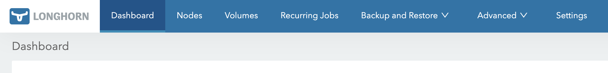

개요
Longhorn 버전
v2가 더 좋기는 하겠다만, 아직 experimental 이라는 이야기도 있고 IOMMU 로 격리된 NVMe 가 필요하다는 등등의 이야기가 많아서v1로 진행한다.
- 사실 간단하게 사용하려면 NFS 로도 충분하고, Proxmox 에서는 ZFS 를 쓸 수 있기 때문에 Democratic CSI 를 사용할 수도 있다.
- 근데 언제까지 그렇게 살래 이 화상아. Kubernetes 에서 많이 사용되는 렁혼? 한번 써보자 이거야.
1. Prerequisites
- Longhorn 이 돌아가는 모든 worker node 에 해주면 된다.
1-1. Module 및 Package
참고한 것들
- 이거 두개 깔면 된다.
sudo apt-get update
sudo apt-get install -y open-iscsi nfs-common- Open iSCSI 는 모듈이어서 이놈도 활성화시켜주자.
sudo modprobe iscsi_tcp
echo iscsi_tcp | sudo tee /etc/modules-load.d/iscsi_tcp.conf
sudo systemctl enable --now iscsid1-2. Multipathd 비활성화
참고한 것들
- Multipathd 가 비활성화되어있어야 한다고 한다.
- 우선 Multipathd 에 뭔가 있는지 확인
- 아무것도 안나오면 정상이다.
sudo multipath -ll- 그리고 비활성화
- 뭐
multipathd.sock이 살아있다고 warning 이 뜰 수는 있는데 괘안타.
- 뭐
sudo systemctl disable --now multipathd
sudo systemctl mask multipathd1-3. Dedicated Disk
참고한 것들
- Longhorn 에서는 root 에 설치하지 말고 Longhorn 용 디스크를 별도로 사용하라고 한다. 물론 필수는 아니고 추천이다.
- 그래서 한놈을 잡아왔다고 해보자. 우선 이놈 이름을 확인한다.
lsblk- 그리고 이놈을
ext4로 포맷해준다.- Longhorn v1 은
ext4아니면xfs를 지원한다고 한다. - 그리고 여기서 중요한건 저
-L longhorn이다.lsblk으로 확인한 디스크 이름은 재부팅할 때 바뀔수도 있기 때문에, 저렇게 label 을 붙여주면 디스크 이름이 바뀌어도 문제가 없다.
- Longhorn v1 은
sudo mkfs.ext4 -L longhorn /dev/어쩌고- Longhorn 은 기본적으로
/var/lib/longhorn경로를 사용한다. 물론 설정으로 바꿀 수도 있는데 굳이? - 그래서 이 경로에 디렉토리를 만들어준다.
sudo mkdir -p /var/lib/longhorn- 그리고 위에서 만든
ext4를 이 경로에 마운트해준다.
echo 'LABEL=longhorn /var/lib/longhorn ext4 defaults,nofail 0 2' \
| sudo tee -a /etc/fstab
sudo systemctl daemon-reload
sudo mount -a1-4. 확인
- Package 설치 확인
dpkg -l nfs-common open-iscsi- Open iSCSI module/service 확인
systemctl is-active iscsid
lsmod | grep iscsi_tcp- Multipathd 비활성화 확인
systemctl is-active multipathd- 디스크 확인
findmnt -n /var/lib/longhorn2. Helm 으로 배포
2-1. Helm values
- Namespace 부터 만들어주자.
longhorn-system이 default 이다.- 물론 바꿔도 되긴 하는데 약간 이게 convention 이어서 이걸로 하는게 맘편할듯.
kubectl create namespace longhorn-system- Helm value 는 이래해주면 된다.
persistencedefaultClass: 이미 다른 default CSI provider 가 있으면false로 해주면 된다. 잘 모르겠으면true로 하면 된다. 다른 CSI provider 를 설치했다면 모를리가 없기 때문.defaultFsType: 위에서 FS 를ext4로 했으니까 여기에ext4라고 적으면 된다.defaultClassReplicaCount: 이 replica 는 Deployment 의 replica 가 아니라 storage 복제를 말하는거다. 특별한 이유가 없다면2로 하는게 적당하다.
defaultSettingsdefaultDataPath: 위에서 사용한/var/lib/longhorn쓰면 된다.upgradeChecker:true라면 주기적으로 버전체크를 해서 새 버전이 있으면 UI 에 띄워준다. 뭐 필요하면 enable 하면 된다.v1DataEngine:v1사용할건지. 할거다.v2DataEngine:v2사용할건지. 안할거다.
- UI 설정: Ingress 대신 HTTPRoute 사용할거다.
- 그래서
ingress.enabled: false,httproute.enable: true. - 그리고 그 아래는 HTTPRoute 의 정보들을 넣어주면 된다.
- 그래서
persistence:
defaultClass: true
defaultFsType: ext4
defaultClassReplicaCount: 2
defaultSettings:
defaultDataPath: /var/lib/longhorn
upgradeChecker: false
v1DataEngine: true
v2DataEngine: false
ingress:
enabled: false
httproute:
enabled: true
parentRefs:
- name: {{Gateway 이름}}
namespace: {{Gateway 가 있는 namespace 이름}}
sectionName: {{Gateway listener 이름}}
hostnames:
- {{UI 도메인}}
path: /
pathType: PathPrefix2-2 Helm install
- Repo 추가
helm repo add longhorn https://charts.longhorn.io
helm repo update longhorn- 배포
helm upgrade --install longhorn longhorn/longhorn -n longhorn-system -f values.yaml마무리
- Pod 들이 다 정상이고, UI 에 접속해 봤을 때 이렇게 뜨면 된다:
